공조냉동기계산업기사 (2002-09-08 기출문제)
1과목: 공기조화
1. 습공기의 수증기 분압과 그 온도에 있어서의 포화공기의 수증기 분압과의 비율을 무엇이라 하는가?
- 절대습도
- 상대습도
- 열수분비
- 비교습도
(정답률: 68%)

2. 체감(體感)을 나타내는 척도로서 사용되고 있는 수정 유효 온도는 다음 조합중 어느 것인가?
- 온도, 습도
- 습도, 기류
- 온도, 습도, 기류
- 온도, 습도, 기류, 복사
(정답률: 54%)
3. 증기난방 방식 중 응축수의 환수방법에서 증기의 순환이 가장 빠른 환수방법은?
- 진공식
- 중력식
- 자연식
- 고압식
(정답률: 64%)
4. 고온수 난방의 특징으로 옳지 않은 것은?
- 온수 난방의 장점에 증기 난방의 장점을 갖춘 것과 같다.
- 보통 온수 난방에 비해 방열면적이 적어도 된다.
- 보통 온수 난방보다 안전하다.
- 강판제 방열기를 써야 한다.
(정답률: 59%)
5. 다음의 공조방식 중 수 - 공기 방식이 아닌 것은?
- 복사 냉난방 방식
- 2중 닥트 방식
- FCU - 닥트 방식
- 유인 유니트 방식
(정답률: 64%)
6. 다음 중 공조장치의 덕트설치시 풍속 결정방법중 옳지 않은 것은?
- 등속도법
- 등마찰법
- 정압 재취득법
- 정압손실법
(정답률: 42%)
7. 다음 중 에너지 손실이 가장 큰 공조방식은?
- 단일 덕트방식
- 2중 덕트방식
- F.C 유니트방식
- 각층 유니트방식
(정답률: 74%)
8. 공기 조절기의 공기 냉각코일에서 공기와 냉수의 온도 변화가 그림과 같았다.이 코일의 대수 평균 온도차(LMTD)는 얼마인가?
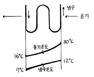
- 14℃
- 9.56℃
- 12.98℃
- 5℃
(정답률: 47%)
9. 동일 송풍기에서 정압은 회전수비에 ①하고 소요동력은 회전수비에 ②한다. 알맞는 내용은 어느 것인가?
- ①2승에 비례, ②3승에 비례
- ①2승에 반비례, ②3승에 반비례
- ①3승에 비례, ②2승에 비례
- ①3승에 반비례, ②2승에 반비례
(정답률: 78%)
10. 온수 10,000㎏/hr를 70℃에서 90℃로 가열하는 열교환기가 있다. 이 때 열교환기의 가열량은?(단, 발생온수의 비열은 1.0㎉/㎏℃이다.)
- 100,000㎉/hr
- 200,000㎉/hr
- 300,000㎉/hr
- 400,000㎉/hr
(정답률: 71%)
11. 다음은 건물의 열손실을 줄이기 위한 방안이다. 맞는 것은?
- 열 전도율이 양호한 재료를 사용한다.
- 건물의 층고를 가급적 낮게한다.
- 개구부를 크게 계획한다.
- 환기량을 크게한다.
(정답률: 57%)
12. 주철제 보일러의 장점을 열거한 것 중 잘못된 것은?
- 강도가 높아 고압용에 사용된다.
- 내식성이 우수하며 수명이 길다.
- 조립식이므로 운반,반입이 용이하다.
- 취급이 간단하다.
(정답률: 63%)
13. 크린룸의 청정도 등급을 나타내는 클라스(class)란 무엇인가?
- 공기 1m3 속에 0.5㎛ 크기의 미립자 수
- 공기 1ft3 속에 0.2㎛ 크기의 미립자 수
- 공기 1m3 속에 0.2㎛ 크기의 미립자 수
- 공기 1ft3 속에 0.5㎛ 크기의 미립자 수
(정답률: 50%)
14. 실내온도를 설정할 때 온도 쇼크를 방지하기 위하여 외기온도와 실내온도의 차이를 얼마 이하로 하는 것이 적당한가?
- 4℃
- 7℃
- 15℃
- 25℃
(정답률: 54%)
15. 온풍난방에 관한 설명 중 틀린 것은?
- 열용량이 적기 때문에 착화하면 곧 난방이 된다.
- 열효율이 나쁘다.
- 보수, 취급이 간단하여 취급에 자격이 필요하지 않는다.
- 설치면적이 적으며 설치 장소도 제약을 받지 않는다.
(정답률: 60%)
16. 덕트설계시에는 송풍기에서 필요한 정압을 계산하여야 한다. 송풍기의 정압이란 무엇인가?
- 송풍기의 전압에서 송풍기 토출측 동압을 뺀 값
- 송풍기의 흡입측 전압에서 송풍기 토출측 동압을 더한 값
- 송풍기의 토출측 전압에서 송풍기 흡입측 동압을 뺀값
- 송풍기의 전압에서 송풍기 흡입측 동압을 더한 값
(정답률: 64%)
17. 다음 중 산업용 공기조화의 범위라고 볼 수 없는 대상은?
- 필름 저장실의 공조
- 맥주 발효실의 공조
- 초코렛 포장실의 공조
- 업무용 사무실의 공조
(정답률: 80%)
18. 배관의 직관부에서 압력손실이 적어질 수 있는 조건은?
- 관의 마찰계수가 클 때
- 관 길이가 길 때
- 관경이 클 때
- 유속이 클 때
(정답률: 78%)
19. 덕트에서 아스펙트비(aspect ratio)의 뜻이 옳은 것은?
- 원형덕트에서 단면적과 직경의 비율
- 원형덕트를 4각덕트로 변화시킬 때 원형덕트와 4각덕트의 면적비
- 4각덕트에서 면적과 장변의 비율
- 4각덕트에서 장변과 단변의 비율
(정답률: 37%)
20. 1000㎏/hr 의 공기를 건구온도 t1=10℃, 절대습도 x=0.0062 ㎏/㎏'로부터 건구온도 t2=30℃까지 가열할 때가열량은? (단, h1=6 ㎉/kg, h2=10.82 ㎉/kg, Cp=0.241 ㎉/kg℃이다)
- 3660 [㎉/hr]
- 6220 [㎉/hr]
- 4820 [㎉/hr]
- 7120 [㎉/hr]
(정답률: 58%)
2과목: 냉동공학
21. 10℃ 이상기체를 등압하에서 100℃까지 팽창시키면 이 기체의 비중량은 처음의 몇 배가 되는가?
- 10
- 1.42
- 0.76
- 2.53
(정답률: 46%)
22. 진공계의 지시가 45㎝Hg일 때의 절대압력은 얼마가 되겠는가?
- 0.0421㎏/cm2 abs
- 0.42㎏/cm2 abs
- 4.21㎏/cm2 abs
- 42.1㎏/cm2 abs
(정답률: 49%)
23. 냉동장치를 장기간 정지할 경우 주의해야 할 사항에 해당되지 않는 것은?
- 냉동장치를 전체 누설검사하고 누설부위는 보수한다.
- 냉매는 장치내에 잔류시키고 장치의 압력은 진공으로 유지한다.
- 밸브류는 캡을 꼭조여 냉매누설이 없도록 한다.
- 냉각수는 드레인 밸브 또는 플러그을 열어 완전히 배출 시킨다
(정답률: 68%)
24. 소형 냉동기의 Brine 순환량이 7㎏/min이며, 그 입구온도와 출구온도와의 차는 10℃이다. 압축기의 실제 소요마력이 2.5HP일때 이 냉동기의 실제 성적계수는? (단, Brine의 비열은 0.8㎉/㎏℃ 이다.)
- 2.126
- 4.252
- 1.786
- 4.572
(정답률: 27%)
25. 제빙장치에 주로 사용되며 상부에는 가스헤드가 있고 하부에는 액헤드가 있으며 상하의 헤드사이에는 다수의 구부러진 증발관이 부착되어져 있는 형태의 증발기는?
- 탱크형 증발기
- 보델로트 증발기
- 이중관식 증발기
- 원통다관식 증발기
(정답률: 40%)
26. 흡입밸브와 토출밸브의 필요조건으로 틀린 것은?
- 밸브의 조작이 원활하고 확실하게 가스가 통과할 때 저항이 적어야 할 것
- 밸브을 개폐하는데 필요한 가스압력의 차가 작을 것
- 밸브의 관성력이 크고 운동이 경쾌할 것
- 밸브가 파손되거나 고장이 없을 것
(정답률: 65%)
27. 다음 설명 중 맞는 것은 어느 것인가?
- 공기열원 히트펌프로 난방운전할 때,압축기의 피스톤 토출량이 일정하면 외기온도가 저하해도 난방능력은 일정하다.
- 동력의 단위는 W로 표시하고 일량의 단위는 J로 표시한다.
- 단열압축에서 압축기 입구 및 출구의 냉매 엔탈피는 같다.
- 압력이 일정할 경우 냉매 1㎏에 가해지는 열량은 그엔탈피의 증가량보다 높다.
(정답률: 59%)
28. 응축압력이 현저하게 상승한 원인으로 옳은 것은?
- 증발기의 능력이 저하되었다.
- 액백(Liquid bacK)현상이 일어나 압축기가 습압축을 하였다.
- 고압수액기의 균압관이 압축기와 균압을 이루지 못했다.
- 유분리기의 기능이 불량하고 응축기에 물때가 많이 부착되어 있다.
(정답률: 55%)
29. 다음은 냉동용 스크류 압축기에 대한 설명이다. 옳지 못한 것은?
- 스크류 압축기는 비교적 소형이지만 냉동능력이 크기 때문에 대형 냉동공장에 적합하다.
- 스크류 압축기의 로터는 압축기 케이싱내의 축수에 의해 지지되어 있고 구동은 숫로터에 의해 이루어진다
- 스크류 압축기의 로터 구성은 여러가지가 있으나 일반적으로 사용되고 있는 것은 숫로터가 4개,암로터가 4개인 것이다.
- 왕복동식과 마찬가지로 스크류 압축기도 흡입,압축,토출의 3행정으로 이루어진다.
(정답률: 67%)
30. R - 13 냉매의 분자량은 104.47이다. R - 13 냉매 증기의 가스정수 R(㎏f· m/㎏f· K)은 얼마인가?
- 8.117
- 7.117
- 0.123
- 0.241
(정답률: 35%)
31. 2원 냉동기의 저온측 냉매로 사용되지 않는 것은?
- 메탄
- 에탄
- R-14
- R-22
(정답률: 51%)
32. C.A 냉장고를 설명한 것은?
- 가정용 냉장고이다.
- 제빙용으로 주로 쓰인다.
- 청과물 저장에 쓰인다.
- 공조용으로 철도, 항공에 주로 쓰인다.
(정답률: 76%)
33. 다음은 증발기의 구조와 작용에 대해 설명한 것이다. 이 중 옳지 않는 것은 ?
- 공기냉각용 증발기는 냉각기 내에 냉매가 잘 분배되어 냉각이 일정하게 행해지도록 분배기를 사용한다.
- 액순환식 증발기는 액펌프에 의해 액을 순환시키므로 온도식 팽창밸브를 사용하지 않는다.
- 공기의 흐름과 냉매의 흐름은 직교류보다 평행류일때 전열작용이 좋다.
- 건식 증발기가 만액식 증발기에 비해 충전냉매량이 적다.
(정답률: 57%)
34. 증발식 응축기에 대한 설명 중 옳지 않은 것은?
- 물의 소비량이 적다.
- 옥상에 설치 가능하다.
- 쿨링 타워(Cooling tower)를 쓰는 것보다 응축온도가 내려간다.
- 냉각관의 부식이 일어나지 않는다.
(정답률: 59%)
35. 응축기에 대한 설명 중 틀린 것은?
- 응축기는 압축기에서 토출한 고온가스를 냉각하여 냉매액으로 만든다.
- 냉매는 응축기에서 냉각수에 의하여 냉각되어 압력이 상승한다.
- 응축기에는 불응축가스가 잔류하는 경우가 있다.
- 응축기의 냉각관의 수측에 스케일이 부착되는 경우가 있다.
(정답률: 61%)
36. 몰리에르 선도상에서 건조도 x에 관한 설명으로 옳은 것은?
- 몰리에르 선도의 포화액선상 건조도는 1이다.
- 액체 70%, 증기30%인 냉매의 건조도는 0.7이다.
- 건조도는 습포화증기 구역 내에서만 존재한다.
- 건조도라 함은 과열증기 중 증기에 대한 포화액체의 양을 말한다.
(정답률: 63%)
37. 아래 P-i 선도는 R-12의 냉동사이클을 표시한다. 냉동부하 16600 Kcal/h 일 때 이론 마력은?
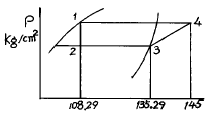
- 9.45 HP
- 4 HP
- 5 HP
- 7.5 HP
(정답률: 29%)
38. 다음 설명 중 냉매의 구비조건이 아닌 것은?
- 임계온도는 상온보다 높아야 한다.
- 응고점은 낮을 수록 좋다.
- 증기의 비체적은 클 수록 좋다.
- 점성계수는 작고 열전도계수는 클 수록 좋다.
(정답률: 53%)
39. 냉매 R502는 어떤 냉매의 혼합 냉매인가?
- R12 - R152a
- R12 - R22
- R22 - R115
- R32 - R115
(정답률: 39%)
40. 공기 1㎏을 압력 1.033㎏/cm2abs,체적 0.85m3의 상태로 부터 압력 5㎏/cm2abs, 온도 300℃로 변화시켰다. 이때 의 온도상승은 얼마인가?
- 372℃
- 368℃
- 298℃
- 273℃
(정답률: 38%)
3과목: 배관일반
41. 배관의 하중을 위에서 걸어 당겨 받치는 역할을 하는 배관 지지물은 어떤 지지물에 속하는가?
- 행거
- 서포트
- 브레이스
- 리스트 레인트
(정답률: 64%)
42. 350℃ 이하의 온도에서 사용되는 관으로 압력10-100Kg/cm2범위에 있는 보일러 증기관, 수압관,유압관 등의 압력배관에 사용되는 배관은?
- 배관용 탄소강 강관
- 압력배관용 탄소강 강관
- 고압배관용 탄소강 강관
- 고온배관용 탄소강 강관
(정답률: 57%)
43. 유속 2.4m/sec, 유량 15000ℓ /h 일 때 관경을 구하면 몇mm 인가?
- 42
- 47
- 51
- 53
(정답률: 59%)
44. 암모니아 냉매사용시 사용하는 배관재료는?
- 알루미늄 합금관
- 동관
- 아연관
- 강관
(정답률: 66%)
45. 역지밸브의 설명으로 옳은 것은?
- 스윙형과 리프트형이 있다.
- 리프트형은 배관의 수직부에 한하여 사용한다.
- 스윙형은 수평배관만 사용한다.
- 유량조절용으로 적합하다.
(정답률: 50%)
46. 다음 밸브의 설치에 대한 설명 중 틀린 것은?
- 슬루스 밸브는 배관도중에 설치하고 수압 및 유량 조절,개폐용으로 사용된다.
- 슬루스 밸브는 일명 게이트 밸브라고도 한다.
- 스트레이너는 배관도중에 먼지,흙,모래 등을 제거하기 위한 부속품이다.
- 스트레이너는 밸브류 등의 뒤에 설치한다.
(정답률: 69%)
47. 주증기관의 크기와 직접적인 관계가 없는 것은?
- 압력손실
- 수분회수
- 열손실
- 가격
(정답률: 33%)
48. LP가스 조정기의 설치법 중 맞지 않는 것은?
- 조정기의 통기구가 막히지 않도록 할 것.
- 조정기가 동결되지 않도록 주의할 것.
- 통풍이 잘되는 실내에 설치할 것.
- 가스 용기나 배관에 직접 접속할 것.
(정답률: 39%)
49. 주철관과 연(鉛)관의 호칭경은 무엇으로 표시하는가?
- 파이프 외경
- 파이프 내경
- 파이프 유효경
- 파이프 두께
(정답률: 51%)
50. 스팀 사이렌서(steam silencer)의 종류로서 맞는 것은?
- S형과 F형
- S형과 Z형
- V형과 U형
- V형과 Z형
(정답률: 31%)
51. 배관 회로의 환수방식에 있어 역 환수방식이 직접 환수방식보다 우수한 점은 무엇인가?
- 순환펌프의 동력을 줄일 수 있다.
- 배관의 설치 공간을 줄일 수 있다.
- 유량을 균등하게 배분시킬 수 있다.
- 재료를 절약할 수 있다.
(정답률: 76%)
52. 관재를 둥글게 가공할 때 관재의 소요길이 계산은 어느부분을 기준으로 하는가?
- 관재의 표면
- 관재의 중립선
- 내경
- 외경
(정답률: 44%)
53. 급수배관의 마찰손실수두와 관계 없는 것은?
- 관의 길이
- 관의 직경
- 관의 두께
- 유속
(정답률: 66%)
54. 증기난방의 환수 배관방식에서 환수 횡주관이 보일러 수면보다 낮은 위치에 배관되는 것은?
- 습식 환수식
- 건식 환수식
- 중력 환수식
- 진공 환수식
(정답률: 41%)
55. 냉매 배관 중 액관은?
- 압축기와 응축기까지의 배관
- 압축기와 증발기까지의 배관
- 응축기와 수액기까지의 배관
- 팽창밸브와 압축기까지의 배관
(정답률: 62%)
56. 온수난방에서 역 귀환방식(reversed return system)으로 배관하는 이유는?
- 귀환온수를 짧은 거리로 순환할 수 있도록 하기 위해서 이다.
- 방열기와의 배관을 용이하게 하기 위해서 이다.
- 방열기에 이르는 배관에서의 순환율이 같도록 하기 위해서 이다.
- 배관의 길이가 짧아지고 마찰저항을 작게 하기 위해서 이다.
(정답률: 64%)
57. 팽창탱크를 설치하지 않은 온수 난방장치를 작동하였을 때 일어나는 현상으로 올바른 것은?
- 온수저장이 곤란하다
- 온수 순환이 안된다
- 배관의 파열을 일으키게 된다
- 온수 순환이 잘된다
(정답률: 73%)
58. 급탕배관에 대한 설명으로 올바르지 않은 것은?
- 경질 염화비닐 라이닝관은 사용하지 않는 것이 좋다.
- 수평관을 설치할 때는 공기가 차지않도록 적당한 구배를 준다.
- 상향식 배관에서는 급탕관을 앞내림 구배로 한다.
- 직관부가 길면 횡주관 30m마다 신축이음을 하는것이 좋다.
(정답률: 40%)
59. 동관의 접합방법으로 부적당한 것은?
- 납땜 접합
- 플레어 접합
- 용접 접합
- 냉간 접합
(정답률: 64%)
60. 다음 보온재의 종류중 안전 사용 온도가 가장 높은 것은?
- 퍼얼라이트
- 석면
- 우모펠트
- 글래스 울
(정답률: 41%)
4과목: 전기제어공학
61. 피측정 단자에 그림과 같이 결선하여 전압계로 e[V]라는 전압을 얻었을 때 피측정단자의 절연저항은 몇 MΩ 인가? (단, Rm : 전압계 내부저항[Ω], V : 시험전압[V]이다.)
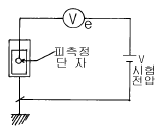
- Rm(eV-1)Ω10-6
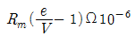
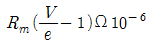
- Rm(V-e)Ω10-6
(정답률: 60%)
62. 그림과 같이 R인 저항을 전류계와 전압계를 사용하여 측정한 결과 각각의 지시가 20㎃, 4V 이었다. R의 값은 몇 Ω 인가? (단, 전압계의 내부저항은 250Ω이다.)
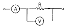
- 500
- 1000
- 1500
- 2000
(정답률: 40%)
63. 복잡한 가공형상이라도 균일하게, 그리고 빠른 속도로 절삭하는 공작기계의 가공에 적용되는 제어의 방법은?
- 속도제어
- 수치제어
- 컴퓨터제어
- 최적제어
(정답률: 59%)
64. 전기로의 온도를 1000℃로 일정하게 유지시키기 위하여 열전온도계의 지시값을 보면서 전압조정기로 전기로에 대한 인가전압을 조절하는 장치가 있다. 이 경우 열전온도계는 어느 용어에 해당되는가?
- 조작부
- 검출부
- 제어량
- 조작량
(정답률: 68%)
65. 저항 R=3?과 유도리액턴스 XL=4?이 직렬로 연결된 회로에 e=100√2 sinωt[V]인 전압을 가하였을 때 이 회로에서 소비하는 전력은 몇 ㎾ 인가?
- 1.2
- 2.2
- 3.2
- 4.2
(정답률: 24%)
66. 그림과 같은 계전기 접점회로의 논리식은?
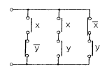
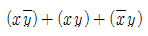
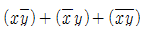
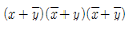
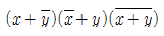
(정답률: 69%)
67. 전력선, 전기기기 등 보호대상에 발생한 이상상태를 검출하여 기기의 피해를 경감시키거나 그 파급을 저지하기 위하여 사용되는 것은?
- 보호계전기
- 보조계전기
- 전자접촉기
- 시한계전기
(정답률: 76%)
68. 3상 권선형 유도전동기의 2차회로에 저항기를 접속시키는 이유가 될 수 없는 것은?
- 속도를 제어하기 위해서
- 기동전류를 제한시키기 위해서
- 기동토크를 크게 하기 위해서
- 최대토크를 크게 하기 위해서
(정답률: 58%)
69. 임피던스 전압강하 4%의 변압기가 운전 중 단락되었을 때 단락전류는 정격전류의 몇 배가 흐르는가?
- 15
- 20
- 25
- 30
(정답률: 57%)
70. 폐회로를 형성하는 출력측의 신호를 입력측에 되돌려 제어하는 방식은?
- 피드백제어
- 시퀀스제어
- 프로그램제어
- 리세트제어
(정답률: 76%)
71. 출력의 변동을 조정하는 동시에 목표값에 정확히 추종 하도록 설계한 제어계는?
- 추치제어
- 프로세스제어
- 자동조정
- 정치제어
(정답률: 64%)
72. 피드백제어계에서 제어요소에 대한 설명 중 옳은 것은?
- 목표값에 비례하는 신호를 발생하는 요소이다.
- 조절부와 검출부로 구성되어 있다.
- 동작신호를 조작량으로 변화시키는 요소이다.
- 조절부와 비교부로 구성되어 있다.
(정답률: 48%)
73. 유도전동기에서 인가전압이 일정하고 주파수가 정격값에서 수 ％ 감소할 때 발생되는 현상이 아닌 것은?
- 동기속도가 감소한다.
- 철손이 약간 증가한다.
- 누설리액턴스가 증가한다.
- 역률이 나빠진다.
(정답률: 49%)
74. 그림에서 a, b단자에 100V를 인가할 때 저항 2?에 흐르는 전류 Ｉ1은 몇 A 인가?
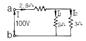
- 10
- 15
- 20
- 25
(정답률: 38%)
75. 그림은 인덕턴스회로에서 V, i의 관계를 설명하고 있다. 그 특징에 대한 설명으로 옳은 것은?
- 전압과 전류는 동일 주파수의 정현파이다.
- 전류가 전압보다 위상이 90° 앞선다.
- 실효치의 비가 1/wL이다.
- 콘덴서회로와 같이 다른 주파수의 정현파이다.
(정답률: 47%)
76. 1F, 1/2F, 1/3F의 콘덴서를 직렬로 연결하고 양단에 가한 전압을 서서히 상승시키면? (단, 유전체의 재질 및 두께는 같다.)
- 콘덴서가 모두 동시에 파괴된다.
- 1F의 콘덴서가 제일 먼저 파괴된다.
- 1/2F의 콘덴서가 제일 먼저 파괴된다.
- 1/3F의 콘덴서가 제일 먼저 파괴된다.
(정답률: 52%)
77. 무접점 시퀀스의 특성으로 옳지 않은 것은?
- 동작속도가 빠르다.
- 고빈도 사용에 견디고 수명이 길다.
- 전기적 노이즈 서지에 약하다.
- 온도 특성이 양호하다.
(정답률: 34%)
78. 그림의 신호흐름선도에서 C/R의 값은?
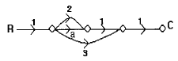
- a+2
- a+3
- a+5
- a+6
(정답률: 64%)
79. 컴퓨터실의 온도를 항상 18℃로 유지하기 위하여 자동 냉난방기를 설치하였다. 이 자동 냉난방기의 제어는?
- 정치제어
- 추종제어
- 비율제어
- 서보제어
(정답률: 67%)
80. 서보기구의 조작부에 사용되지 않는 전동기는?
- 교류 서보전동기
- 스테핑모터
- 유압전동기
- 동기전동기
(정답률: 35%)